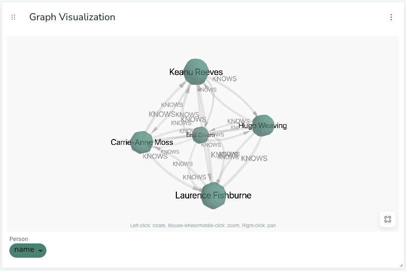

3D Graph
|
This documentation pertains to the (legacy) unsupported version of NeoDash. For users of the supported NeoDash offering, refer to NeoDash commercial. |
The 3D graph report extends the default graph visualization with another dimension. It supports most of the features & customizations for the regular (2D) graph, including rule-based styling and report actions. Users can explore the 3D graph by zooming and panning through 3D space.
Virtual Graph
MATCH (p:Person)-[:ACTED_IN]->(m:Movie)<-[:ACTED_IN]-(p2:Person)
WHERE m.title = "The Matrix"
RETURN p, p2, apoc.create.vRelationship(p, "KNOWS", {}, p2)

Advanced Settings
| Name | Type | Default Value | Description |
|---|---|---|---|
Node Color Scheme |
List |
neodash |
The color scheme to use for the node labels. Colors are assigned automatically (consequitevely) to the different labels returned by the Cypher query. |
Node Label Color |
Text |
black |
The color of the labels drawn on the nodes. |
Node Label Font Size |
Number |
3.5 |
Size of the labels drawn on the nodes. |
Node Size |
Number |
2 |
Default size of a node in the graph visualization. This size is applied if no custom size styling is defined and no Rule-Based styling is active. |
Node Size Property |
Text |
size |
Optionally, the name of the node property to map to the node size. This lets you define sizes on a node-specific level, if you have a property that directly maps to the numeric size value. |
Node Color Property |
Text |
color |
Optionally, the name of the node property to map to the node color. This lets you define colors on a node-specific level, if you have a property that directly maps to the HTML color value. |
Relationship Color |
Text |
#a0a0a0 |
The color used for drawing the relationship arrows in the visualization. |
Relationship Width |
Text |
1 |
The (default) width of the relationship arrows in the visualization. |
Relationship Label Color |
Text |
#a0a0a0 |
The color of the labels (relationship type) drawn next to the relationship arrows. |
Relationship Label Font Size |
Text |
2.75 |
The font size of the labels (relationship type) drawn next to the relationship arrows. |
Relationship Color Property |
Text |
color |
Optionally, the name of the relationship property to map to the arrow color. This lets you define colors on a relationship-specific level, if you have a property that directly maps to the HTML color value. |
Relationship Width Property |
Text |
width |
Optionally, the name of the relationship property to map to the arrow width. This lets you define widths on a relationship-specific level, if you have a property that directly maps to the width value. |
Animated Particles on Relationships |
on/off |
off |
If enabled, draw relationships with animated particles on them, moving in the direction of the relationship. |
Arrow head size |
Number |
3 |
Use this to set the length of the arrow head, size is adjusted automatically. If 0, no arrow will be drawn. |
Background Color |
Text |
#fafafa |
The background color of the visualization. |
Layout (experimental) |
List |
force-directed |
tree-top-down |
tree-bottom-up |
tree-left-right |
tree-right-left |
radial |
Use this to switch from the main (force-directed) layout to one of the experimental layouts (tree, radial). For the experimental layouts, make sure your graph is a DAG (directed acyclic graph). |
Graph Depth Separation |
Number |
30 |
Specify the level distance for the tree layout. This setting controls the separation between different levels in the tree hierarchy. Adjusting this value impacts the overall spacing of the tree layout in your graph visualization. |
Enable graph exploration |
on/off |
on |
Enables basic exploration functionality for the graph. Exploration can be done by right clicking on a node, and choosing 'Expand' to choose a type to traverse. Data is retrieved real-time and not cached in the visualization. |
Enable graph editing |
on/off |
off |
Enables editing of nodes and relationships in the graph from the right-click context menu. In addition, lets users create new relationships with existing types/property keys as present in the database. |
Show pop-up on Hover |
on/off |
on |
if enabled, shows a pop-up when a user hovers over one of the nodes/relationships in the visualization. The pop-up contains the label and properties of the node/relationship. |
Show properties on Click |
on/off |
on |
if enabled, opens up a window when a user clicks on one of the nodes/relationships in the visualization. The window contains the label and properties of the node/relationship. |
Drilldown Link |
Text (URL) |
(no value) |
Specifying a URL here will display a floating button on the top right of the visualization. This button can be used to drilldown into a different tool (e.g. Bloom) so that the graph can be explored further. Dynamic Dashboard Parameters (e.g. $neodash_person_name) can be used in these links as well. |
Hide Selections |
on/off |
off |
If enabled, hides the property selector (footer of the visualization). |
Override no data message |
Text |
Query returned no data. |
Override the message displayed to the user when their query returns no data. |
Auto-run query |
on/off |
on |
when activated automatically runs the query when the report is displayed. When set to `off', the query is displayed and will need to be executed manually. |
Report Description |
markdown text |
Rule-Based Styling
Using the Rule-Based Styling menu, the following style rules can be applied to the graph:
-
The background color of a node.
-
The label color of a node.